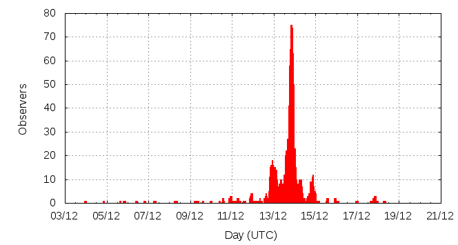

[ www.imo.net ]
This page shows automated results of the Geminids 2012, based on visual observations reported by citizen scientists through the report form of the International Meteor Organization (IMO). The information on this page is generated automatically; for scientific use please refer to manual analyses published in scientific journals (such as WGN). Send your feedback regarding this page to Geert Barentsen.
Page contents:
Note that the data will finally go into the Visual Meteor Database (VMDB) with manual inspection and rectifications. We are curretly completing the files of 2008-2011. The VMDB is an enormous project - any help will be greatly appreciated.
Page generated: 2013 August 6 at 22:20 UTC.
The graph below shows the ZHR (Zenithal Hourly Rate), which is the number of meteors an observer would see under a very dark sky with the radiant of the shower in zenith.
ZHRmax = 109 based on 22892 Geminids reported in 1663 intervals, assuming population index r = 2.2

| Time (UTC) | Solarlon | nINT | nGEM | ZHR | Particle density | |
|---|---|---|---|---|---|---|
| 2012-12-04 20:45 | 252.936 | 3 | 3 | 26 | ±13 | 63 / 109·km3 |
| 2012-12-06 01:09 | 254.137 | 6 | 3 | 3 | ±2 | 7 / 109·km3 |
| 2012-12-07 00:43 | 255.134 | 5 | 6 | 6 | ±2 | 15 / 109·km3 |
| 2012-12-08 13:37 | 256.695 | 4 | 19 | 8 | ±2 | 20 / 109·km3 |
| 2012-12-09 14:00 | 257.728 | 4 | 13 | 9 | ±2 | 22 / 109·km3 |
| 2012-12-10 16:03 | 258.832 | 10 | 25 | 8 | ±2 | 20 / 109·km3 |
| 2012-12-10 23:26 | 259.144 | 5 | 29 | 10 | ±2 | 24 / 109·km3 |
| 2012-12-11 04:18 | 259.350 | 6 | 21 | 9 | ±2 | 22 / 109·km3 |
| 2012-12-11 08:43 | 259.538 | 3 | 47 | 20 | ±3 | 49 / 109·km3 |
| 2012-12-11 15:52 | 259.840 | 5 | 24 | 17 | ±3 | 41 / 109·km3 |
| 2012-12-11 22:33 | 260.124 | 9 | 128 | 24 | ±2 | 59 / 109·km3 |
| 2012-12-12 04:41 | 260.383 | 3 | 38 | 27 | ±4 | 66 / 109·km3 |
| 2012-12-12 08:53 | 260.561 | 11 | 126 | 57 | ±5 | 139 / 109·km3 |
| 2012-12-12 15:13 | 260.830 | 8 | 66 | 47 | ±6 | 115 / 109·km3 |
| 2012-12-12 20:39 | 261.060 | 63 | 648 | 61 | ±2 | 149 / 109·km3 |
| 2012-12-13 00:03 | 261.205 | 130 | 1629 | 66 | ±2 | 161 / 109·km3 |
| 2012-12-13 03:37 | 261.356 | 79 | 1060 | 67 | ±2 | 163 / 109·km3 |
| 2012-12-13 08:19 | 261.555 | 79 | 1059 | 84 | ±3 | 205 / 109·km3 |
| 2012-12-13 12:12 | 261.719 | 87 | 685 | 66 | ±3 | 161 / 109·km3 |
| 2012-12-13 16:11 | 261.888 | 148 | 1776 | 104 | ±2 | 254 / 109·km3 |
| 2012-12-13 20:08 | 262.056 | 462 | 8300 | 95 | ±1 | 232 / 109·km3 |
| 2012-12-13 23:29 | 262.197 | 338 | 5124 | 109 | ±2 | 266 / 109·km3 |
| 2012-12-14 03:57 | 262.387 | 67 | 946 | 109 | ±4 | 266 / 109·km3 |
| 2012-12-14 07:45 | 262.548 | 64 | 653 | 84 | ±3 | 205 / 109·km3 |
| 2012-12-14 14:09 | 262.819 | 5 | 21 | 60 | ±13 | 146 / 109·km3 |
| 2012-12-14 19:04 | 263.028 | 26 | 172 | 30 | ±2 | 73 / 109·km3 |
| 2012-12-14 22:10 | 263.160 | 22 | 231 | 23 | ±2 | 56 / 109·km3 |
| 2012-12-15 13:05 | 263.792 | 4 | 26 | 10 | ±2 | 24 / 109·km3 |
| 2012-12-16 11:28 | 264.741 | 2 | 8 | 6 | ±2 | 15 / 109·km3 |
| 2012-12-18 01:50 | 266.368 | 5 | 6 | 2 | ±1 | 5 / 109·km3 |
The reported intervals are automatically added together into the bins shown above, based on the number of meteors and the distribution of the intervals. For each bin, the following parameters are computed:
Data has been received from 160 observers in 40 countries. Thank you for your efforts!
Note: click on the map for an interactive version.

| Observer | Country | Teff | nGEM |
|---|---|---|---|
| Ashwini Adivarekar | India | 2.04h | 127 |
| Alireza Akhlaghi | Iran | 0.17h | 22 |
| Jose Alvarellos | United States | 0.97h | 26 |
| Alexandre Amorim | Brazil | 1.76h | 0 |
| Tanapon Anankittikun | Thailand | 0.83h | 11 |
| Anuja Anil Parkar | India | 7.05h | 142 |
| Anuja Anil Parkar | India | 1.63h | 19 |
| Alberto Daniel Anunziato | Argentina | 0.90h | 4 |
| Rainer Arlt | Germany | 0.32h | 7 |
| Maria-magdalena Arnaudova | Bulgaria | 4.75h | 217 |
| Pratibha Aundhkar | India | 6.17h | 206 |
| Rupali Aundhkar | India | 5.00h | 231 |
| Siddhesh Aundhkar | India | 6.17h | 189 |
| Shrinivas Aundhkar | India | 6.98h | 692 |
| Payas Awadhutkar | India | 1.00h | 45 |
| Janos Bakos | Hungary | 3.32h | 169 |
| Felix Bettonvil | Netherlands | 17.69h | 784 |
| Felix Bettonvil | Netherlands | 6.78h | 185 |
| Suresh Bhattarai | Nepal | 1.00h | 24 |
| Josafary Campelo | Brazil | 0.77h | 8 |
| Yuhang Chen | China | 1.40h | 8 |
| Seokhee Cho | South Korea | 1.32h | 26 |
| Nicolae Adrian Corlaci | Romania | 0.20h | 9 |
| Ilie Cosovanu | Romania | 0.45h | 22 |
| Luigi D'argliano | Italy | 1.62h | 65 |
| Alex Daskalakis | Greece | 1.02h | 19 |
| Neha Das | India | 2.26h | 88 |
| Enrique De Ferra Fantín | Spain | 3.98h | 147 |
| Saniya Deshmukh | India | 6.32h | 553 |
| Jose Vicente Diaz Martinez | Spain | 1.00h | 55 |
| Sietse Dijkstra | Netherlands | 8.50h | 345 |
| Nikit Dongaonkar | India | 0.50h | 12 |
| Dariusz Dorosz | Poland | 1.67h | 27 |
| John Drummond | New Zealand | 1.00h | 8 |
| Jaros?aw Dygos | Poland | 3.33h | 148 |
| Garry Dymond | Canada | 5.50h | 103 |
| Frank Enzlein | Germany | 0.33h | 20 |
| Richard Fleet | United Kingdom | 3.5h | 38 |
| Richard Fleet | United Kingdom | 1.00h | 14 |
| Bo Gao | China | 0.42h | 104 |
| Ivanka Getsova | Bulgaria | 6.3h | 312 |
| Ganesh Ghugari | India | 1.00h | 23 |
| Shaneshwar Ghugal | India | 5.08h | 130 |
| Umesh Giri | India | 5.33h | 231 |
| William Godley | United States | 4.5h | 101 |
| Shy Halatzi | Israel | 3.42h | 291 |
| Carl Hergenrother | United States | 2.89h | 162 |
| Gabriel Hickel | Brazil | 0.98h | 11 |
| Karl Gauti Hjaltason | Iceland | 2.33h | 75 |
| Jane Houston Jones | United States | 3.25h | 30 |
| Chengyun Huang | China | 0.15h | 1 |
| Yingying Huang | China | 1.08h | 7 |
| Di Hu | China | 0.99h | 1 |
| Pooja Jaju | India | 6.17h | 206 |
| Karoly Jonas | Hungary | 11.61h | 307 |
| Manisha Kadam | India | 6.17h | 475 |
| Archana Kale | India | 1.35h | 75 |
| Jay Kansara | India | 7.38h | 208 |
| Sarang Karpate | India | 0.50h | 35 |
| Thomas Karlsson | Sweden | 1.92h | 30 |
| Omri Katz | Israel | 7.65h | 303 |
| Akshay Khachane | India | 7.18h | 212 |
| Elena Kolisheva | Bulgaria | 3.83h | 172 |
| Pradeep Korde | India | 6.17h | 189 |
| Roman Kostenko | Ukraine | 1.21h | 123 |
| Mangesh Kothari | India | 5.08h | 189 |
| Swati Kothari | India | 6.17h | 189 |
| Roman Kovalyk | Italy | 5.23h | 86 |
| Pete Kozich | United States | 1.72h | 105 |
| Rhishikesh Kulkarni | India | 2.93h | 188 |
| Sneha Kulkarni | India | 1.25h | 21 |
| Anna L | Israel | 2.13h | 92 |
| Tomasz Lenart | Poland | 2.91h | 75 |
| Anna Levin | Israel | 16.98h | 777 |
| Pingping Liang | China | 1.65h | 16 |
| Liangchen Li | China | 0.45h | 5 |
| Michael Linnolt | United States | 1.6h | 21 |
| Ruijia Li | China | 2.42h | 14 |
| Pin Liu | China | 0.75h | 2 |
| Hk Lkm | Hong Kong | 1.00h | 45 |
| Lin Luo | China | 6.17h | 71 |
| Saurabh Madankar | India | 8.96h | 176 |
| Santosh Mahato | India | 1.00h | 7 |
| Qiang Ma | China | 1.00h | 4 |
| Adam Marsh | Australia | 7.3h | 41 |
| Liad Marom | Israel | 4.59h | 162 |
| Mayuresh Marathe | India | 1.91h | 30 |
| Pierre Martin | Canada | 12.97h | 824 |
| Alastair Mcbeath | United Kingdom | 1.00h | 30 |
| Bruce Mccurdy | Canada | 3.00h | 169 |
| Fabrizio Melandri | Italy | 1.00h | 34 |
| Paresh Mhetre | India | 1.34h | 17 |
| Kianoosh Mohseni | Iran | 1.00h | 91 |
| Shraddha Mohapekar | India | 5.33h | 231 |
| Sirko Molau | Germany | 2.62h | 96 |
| Swapna Mote | India | 0.88h | 23 |
| Ben Nathaniel | Israel | 1.54h | 61 |
| Martin Nedved | Czech Republic | 3.73h | 164 |
| Basil Nikolau | United States | 1.33h | 37 |
| Pisit Nitiyanant | Thailand | 2.92h | 150 |
| Michael Nolle | Malta | 5.17h | 140 |
| Benítez Sánchez Orlando | Spain | 1.42h | 15 |
| Jyoti Petkar | India | 5.08h | 130 |
| Bhalchandra Phatak | India | 1.00h | 34 |
| Rahul Piraji Patil | India | 7.58h | 168 |
| Shalan Piraji Patil | India | 4.77h | 207 |
| Shalan Piraji Patil | India | 2.51h | 55 |
| Sasha Prokofyev | Russia | 1.75h | 4 |
| Pranav Pujari | India | 6.17h | 475 |
| Tushar Purohit | India | 0.50h | 30 |
| Ella Ratz | Israel | 3.15h | 172 |
| Jatin Rathod | India | 5.13h | 104 |
| Mario Raymundo | Philippines | 5.76h | 121 |
| Jurgen ^rendtel | Germany | 2.33h | 53 |
| Umesh Rokde | India | 6.17h | 206 |
| Raluca Rufu | Israel | 6.9h | 359 |
| Mikiya Sato | Japan | 1.50h | 111 |
| Tomoko Sato | Japan | 1.50h | 113 |
| Kai Schultze | Germany | 0.20h | 6 |
| Hideki Seo | Japan | 2.00h | 135 |
| Jonathan Shanklin | United Kingdom | 3.00h | 63 |
| Manasi Shaha | India | 3.09h | 193 |
| Nadeem Md Shaikh | India | 5.00h | 244 |
| Dhanashree Shinde | India | 1.06h | 46 |
| Wei Shi | China | 0.50h | 14 |
| Siddharth Shrivastava | India | 1.53h | 60 |
| Costantino Sigismondi | Italy | 0.5h | 5 |
| Priya Singh | India | 5.00h | 244 |
| Harminer Kaur Sohi | India | 6.33h | 553 |
| Martin Stojanovski | Macedonia | 1.58h | 192 |
| Wesley Stone | United States | 5.19h | 319 |
| Bsu Students | Russia | 25h | 382 |
| Fengwu Sun | China | 0.60h | 8 |
| Richard Taibi | United States | 3.13h | 98 |
| Utkarsh Tamboli | India | 6.17h | 475 |
| Ilan Tchenak | Israel | 3.31h | 291 |
| Tamara Tchenak | Israel | 16.16h | 778 |
| Istvan Tepliczky | Hungary | 7.07h | 209 |
| Kazumi Terakubo | Japan | 1.50h | 142 |
| Sonal Thorve | India | 2.00h | 10 |
| Akanksha Tiwary | India | 0.25h | 5 |
| Alexandr Maidik | Ukraine | 0.40h | 1 |
| Michel Vandeputte | Belgium | 15.58h | 372 |
| William Watson | United States | 6.99h | 480 |
| Terrence Ross | United States | 21.34h | 551 |
| Branislav Savic | Serbia | 5.02h | 245 |
| Pierre Bader | Germany | 1.88h | 57 |
| Javor Kac | Slovenia | 6.59h | 288 |
| Salvador Aguirre A. | Mexico | 0.30h | 1 |
| Chih-kuan Tung | United States | 1.32h | 74 |
| Shigeo Uchiyama | Japan | 3.5h | 275 |
| Alice Unger | Israel | 2.75h | 25 |
| Devdatta Urankar | India | 3.01h | 33 |
| Hendrik Vandenbruaene | Belgium | 2.16h | 73 |
| Wienie Van Der Oord | Israel | 0.82h | 25 |
| Tejaswini Varade | India | 6.08h | 125 |
| Daniel Verde Van Ouytsel | Spain | 0.58h | 51 |
| Akshay Vibhute | India | 1.50h | 56 |
| Spandan Waghmare | India | 1.92h | 52 |
| Thomas Weiland | Austria | 21.75h | 943 |
| William William | United States | 1.50h | 59 |
| Oliver Wusk | Germany | 0.33h | 11 |
| Jiaqing Yang | China | 0.41h | 25 |
| Omkar Yarguddi | India | 0.33h | 12 |
| Quanzhi Ye | China | 1.42h | 105 |
| Kim Youmans | United States | 2.00h | 70 |
| Fengfang Yuan | China | 3.00h | 107 |
| Weizhou Zeng | China | 3.82h | 1 |
| Jingyi Zhao | China | 0.33h | 22 |
| Tianwei Zhang | China | 3.25h | 1 |
| Qinpo Zheng | China | 2.91h | 99 |
| Yufeng Zhu | China | 1.33h | 17 |
Create your own analysis. The files below can be opened using Excel:
gem2012_rate.csv (number of meteors per interval per observer)
gem2012_magn.csv (number of meteors per magnitude bin per observer)
The information on this page may be distributed freely provided credit is given to the International Meteor Organization (IMO) and, when possible, to the individual observers. The computer facilities to generate this page are provided by ESA/RSSD and Armagh Observatory.
References: